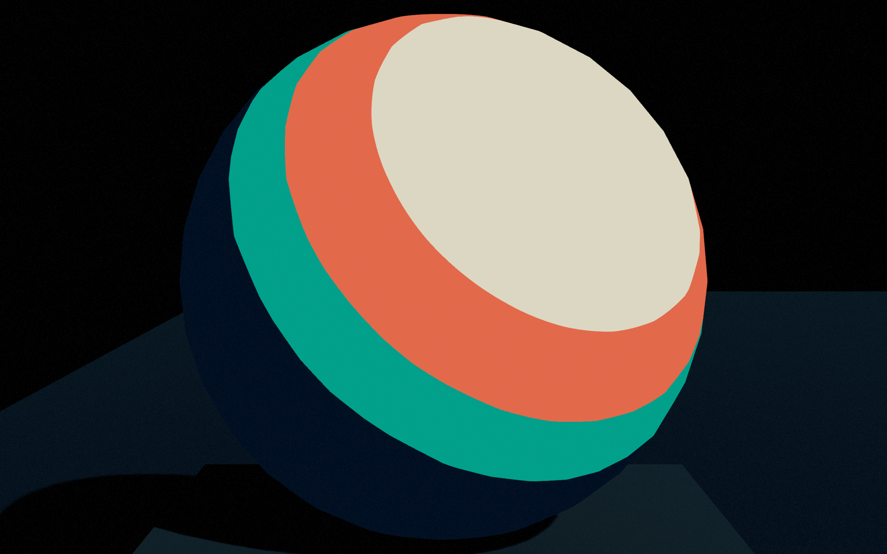
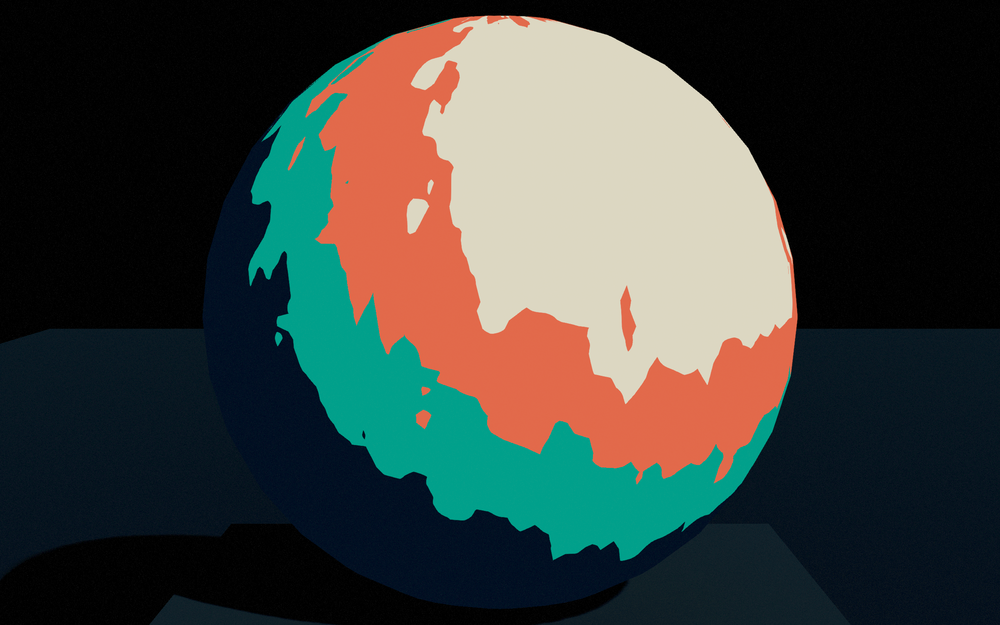

Separate the artistic controls

Palette and thresholds define regions.

A brush mask varies the signal before thresholding.
Region size, color choice and edge character are separate controls. The mesh silhouette stays unchanged.
Try one controlled change
- Open lesson 06 and reset its controls.
- Set TextureInfluence to 0. Keep the palette and Tiling fixed.
- Compare 0.08 and 0.18. Find a value that adds edge character while preserving the large form.
- Save the baseline and one result. Explain the input, operation and visual change.
The browser uses three colors; the existing UE example uses four. Both demonstrate the mechanism, not identical final images. Its light direction is a parameter, not the scene’s lighting system.
Open the original student shader · Read the matched GLSL and HLSL